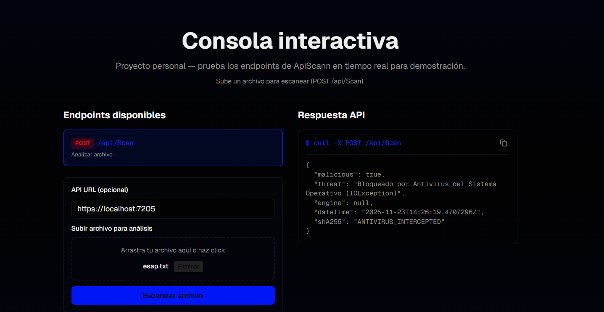
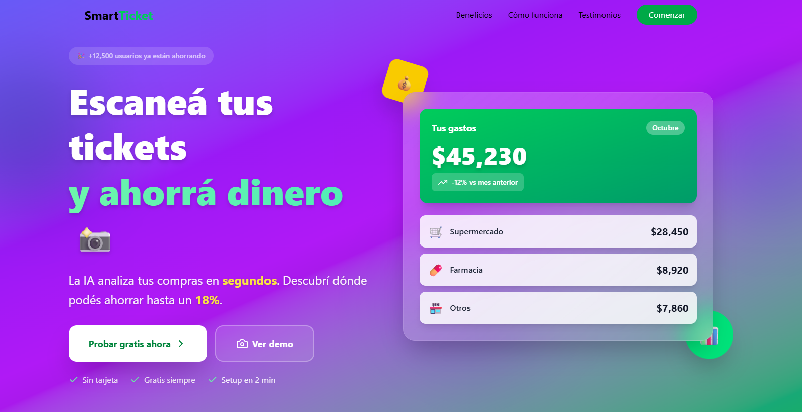
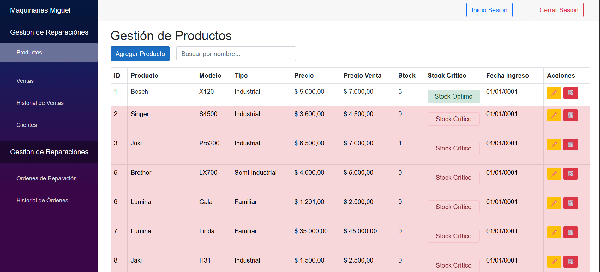
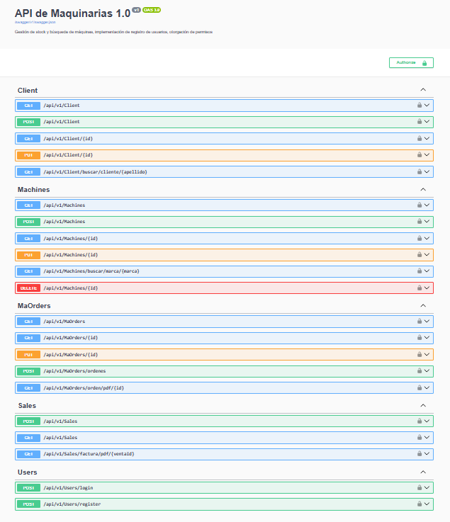
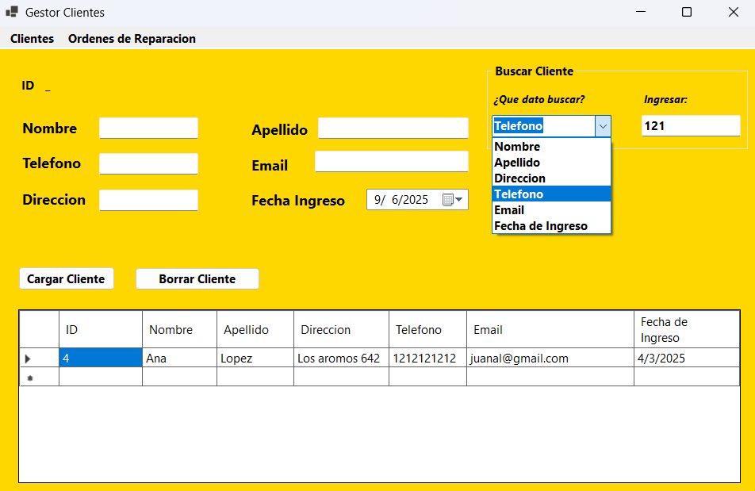
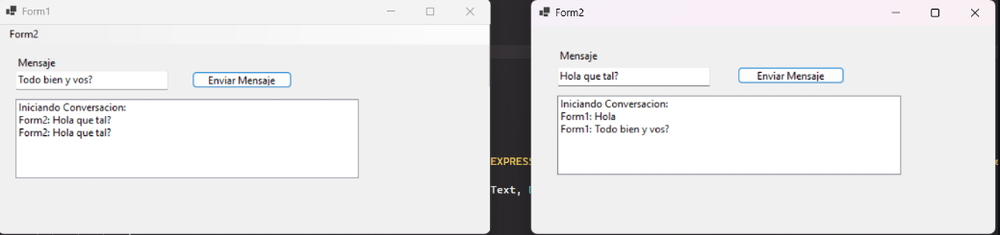

TOMAS MARTELON
Analista Programador
Conóceme
Soy Analista Programador con formación en desarrollo de software y Ciberseguridad con un interés constante por las nuevas tecnologías.
Trabajo con C#, .NET, Blazor, API REST, y poseo conocimientos en inteligencia artificial y ciberseguridad.
Me considero una persona curiosa, proactiva y orientada a la mejora continua. Disfruto diseñar y programar sistemas que realmente aporten valor a las personas o negocios, buscando siempre escribir código limpio y eficiente.
Proyectos

API Seguridad Archivos
API REST desarrollada en C# (.NET 8) que permite escanear archivos subidos para detectar malware usando Windows Defender. Incluye validaciones de seguridad como extensión de archivo, MIME type, doble extensión y genera el hash SHA256 del archivo para auditoría.

SmartTicket
Diseño y Desarrollo de landing page, para aplicacion web enfocada al control de gastos mediante el uso de inteligencia artificial. La aplicacion permite al usuario llevar un control de sus gastos realizando una foto a su ticket de compra, y mediante IA se extraen todos los datos del ticket, se almacenan y permite tener ademas de control de gastos, comparación de precios entre comercios.

Sistema de Gestión Integral
Dashboard en Blazor, control de productos, ventas, estadísticas, generación de tickets venta y órdenes de reparación

API REST - Gestor
API RESTful desarrollada en C# con .NET 8 y SQL Server para gestionar un catálogo de máquinas. Permite realizar operaciones CRUD (Crear, Leer, Actualizar, Eliminar), búsqueda por filtros y validación de datos.

Generador QR
Proyecto desarrollado para consumir la API de Woocommerce de tiendas y generar códigos QR en PDF. Estos códigos se utilizan en tiendas físicas permitiendo que cada producto tenga su QR.

Sistema Gestión Clientes
Proyecto académico desarrollado en C# que permite la gestión de clientes y ventas. Utiliza la librería iTextSharp para exportar tickets/órdenes en formato PDF.

Chat Bidireccional Local
Chat bidireccional local desarrollado en C# con Windows Forms, que utiliza SQL Server como backend y procedimientos almacenados para gestionar mensajes.
Proyectos Ciberseguridad

LavaShop - CTF Inicial
Documentación profesional y verificable la explotación completa de la máquina LavaShop, correspondiente a un entorno de laboratorio.

OfusPingu - CTF Avanzado
Documentación profesional y verificable la explotación completa de la máquina OfusPingu, correspondiente a un entorno de laboratorio.

Back To The Future I - CTF Avanzado
Documentación profesional y verificable la explotación completa de la máquina Back To The Future I, correspondiente a un entorno de laboratorio.
NewsLetter
Educación
Analista Programador
Descripción de tus estudios actuales, especialización o áreas de enfoque principal.
Experto Universitario en Hacking Etico.
Formación especializada en pentesting, análisis de vulnerabilidades y seguridad informática.
Cursos Desarrollo Web
Realize la carrera de desarrollo Front-End en CoderHouse, en donde aprendi a gestionar proyectos web de inicio a fin.
Contacto
Si te interesa colaborar, contratarme o conocer más sobre mi trabajo, no dudes en escribirme.